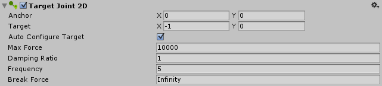

Target Joint 2D
This joint connects to a specified target, rather than another rigid body object, as other joints do. It is a spring type joint, which you could use for picking up and moving an object acting under gravity, for example.

| Property: | Function: |
|---|---|
| Anchor | The place (in terms of X, Y co-ordinates on the RigidBody) where the end point of the joint connects to this object. |
| Target | The place (in terms of X, Y co-ordinates in the world space) towards which the other end of the joint attempts to move. |
| Auto Configure Target | Check this box to automatically set the other end of the joint to the current position of the object. (This option is useful when you are moving the object around, as it sets the initial target position as the current position.) Note that when this option is selected, the target changes as you move the object; it won't change if the option is unselected. |
| Max Force | Sets the force that the joint can apply when attempting to move the object to the target position. The higher the value, the higher the maximum force. |
| Damping Ratio | The degree to which you want to suppress spring oscillation: In the range 0 to 1, the higher the value, the less movement. |
| Frequency | The frequency at which the spring oscillates while the objects are approaching the separation distance you want (measured in cycles per second): In the range 0 to 1,000,000 -, the higher the value, the stiffer the spring. |
| Break Force | Specify the force level needed to break and so delete the joint. Infinity means it is unbreakable. |
Details
(See also Joints 2D: Details and Hints for useful background information on all 2D joints.)
Use this joint to connect a rigid body game object to a point in space.
The aim of this joint is to keep zero linear distance between two points: An anchor point on a rigid body object and a world-space position, called the "Target". The joint applies linear force to the rigid body object, it does not apply torque (anglular force).
The joint uses a simulated spring. You can set the spring's stiffness and movement:
A stiff, barely moving spring...
A high (1,000,000 is the highest) Frequency == a stiff spring.
A high (1 is the highest) Damping Ratio == a barely moving spring.
A loose, moving spring...
A low Frequency == a loose spring.
A low Damping Ratio == a moving spring.
When the spring applies its force between the rigid body object and target, it tends to overshoot the distance you have set between them, and then rebound repeatedly, giving in a continuous oscillation. The Damping Ratio sets how quickly the rigid body object stops moving. The Frequency sets how quickly the rigid body object oscillates either side of the distance you have specified.
This joint has one constraint:
- Maintain a zero linear distance between the anchor point on a rigid body object and a world-space position (Target).
For Example:
You can use this joint to construct physical objects that need to move to designated target positions and stay there until another target position is selected or the turned-off. Such as:
- A game where players pick up cakes, using a mouse-click, and drag them into to a plate. You can use this joint to move each cake to the plate.
You could also use the joint to allow objects to hang: If the anchor point is not the center of mass, then the object will rotate. Such as:
- A game where players pick up boxes. If they use a mouse-click to pick a box up by its corner and drag it, it will hang from the cursor.
HINT:
- Zero in the Frequency is a special case: It gives the stiffest spring possible.